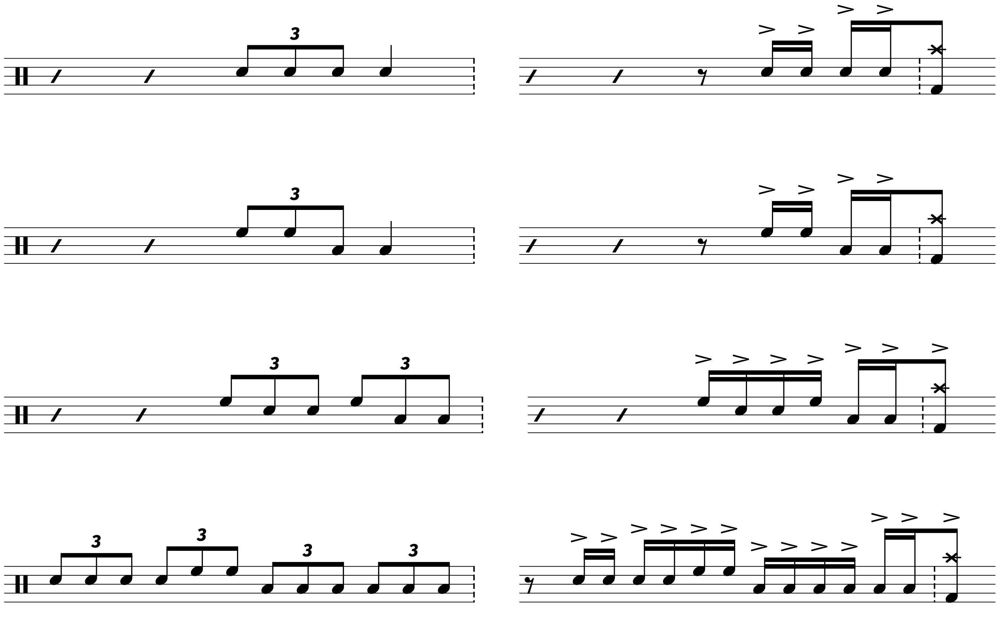
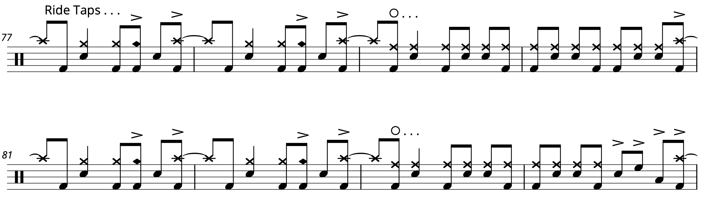

Transcription: “Lycanthrope” — Travis Barker with +44

When I was a freshman in college, I had to deal with the debacle of iCloud and Apple Music destroying my music library. In the midst of that, I rediscovered +44’s one and only album, When Your Heart Stops Beating. +44 was cooked up by Mark Hoppus and Travis Barker after their previous band Blink-182 broke up for the first time. I don’t really remember this album getting released; I think the first time I heard it was around 2007–08. Apparently, it was highly anticipated, so maybe people thought +44 would be the next Blink-182.
The album is… fine. It has its moments, but it’s really nothing special. Unsurprisingly, Travis’ drumming is the most entertaining part of the record. He really does give every song 110% when he comes up with his parts, even if the rest of the songwriting isn’t terribly remarkable.
I might explore this album a bit more in the future. It really is a fascinating moment in history; since Blink-182 has since got back together, +44 is now (basically) defunct. In the meantime, here’s the first song from the album, “Lycanthrope”. By all accounts, the tune appears to be about Blink-182 breaking up, but I have no idea why it’s named after werewolves.
I transcribed the entire song when I was a freshman, but I can’t quite remember what it was about the tune that inspired me to notate it all down. I dunno… if someone looked at everything I’ve shared so far, they might not think a song like “Lycanthrope” needs to be transcribed. But sometimes I am not even sure what kinds of songs need to be transcribed. Since I already did it all, why not share it?
The main point of rhythmic interest concerns the ending of the phrases; notice the emphasis on the “+” after 4. As such, Travis uses a lot of four–note and six–note patterns to fill into the next section. He may have taken some inspiration from more standard triplet fills, repurposed for this tune:
During the chorus, Travis uses a cool little ride bell joint, followed up by a hip kick and snare pattern:
Travis’ playing is very dynamic — he has a knack for creating very engaging grooves, keeping things varied but not too frantic. In this case, you can hear him doing a bit of call and response thing with the vocals, playing two measures with the lead vocals and two measures with the backing part.
It took me some time to figure out what he was playing here. In addition, I couldn’t tell if Travis was crashing on his ride during the main riff, or if he was using a crash cymbal. As I often do in these situations, I turned to live videos. Some of them weren’t much help: Travis had just gotten surgery on his right arm after recording for the album was done, so on all of the publicity shows I could find, he’s actually playing one–handed. I found some fan videos from the tour, and despite the fidelity, I could make out Travis using his Sweet Ride for the main riff.
As an absolutely pointless piece of trivia, Blink-182 Chile shared a video of this tune with just bass, vocals, and drums. I had no idea there was an audience for such a thing. It’s also kind of funny that this got posted on a Blink-182 channel; perhaps a tacit admission that +44 is pretty much the same project as the current Blink?
I thought about trimming down the sheet music since the second verse and chorus are pretty much the same as before. But since I already had it down… why not? The most exciting part is probably the bridge, which is a quasi drum solo that has Travis dishing out some fun 16th note runs:
I think I hear a splash cymbal during this part. I know Travis has one in his setup, but I’m not entirely sure if he’s using it. Trying to focus on that much detail is very tedious, so I’m not gonna stress about it.
“Lycanthrope” on Songwhip.
Posted on July 11, 2021
Tags: 2021 • Transcription • Travis Barker • +44